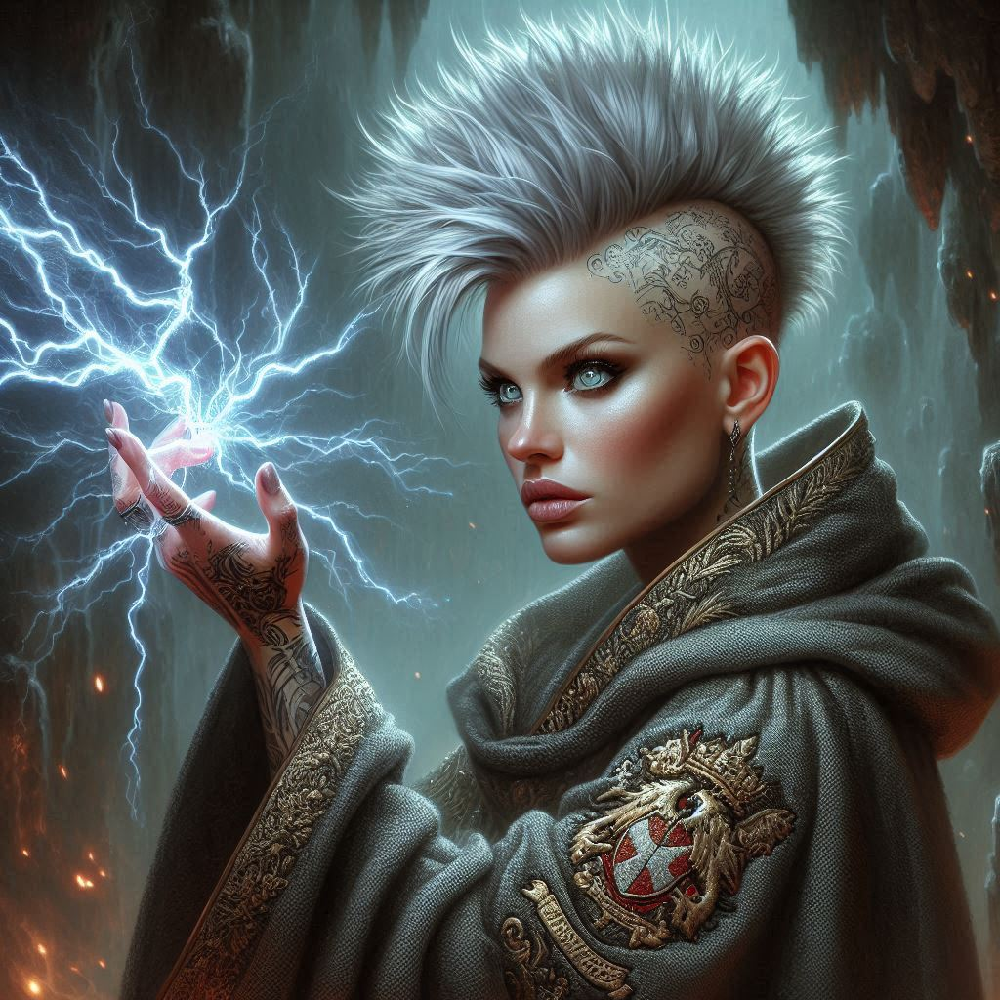
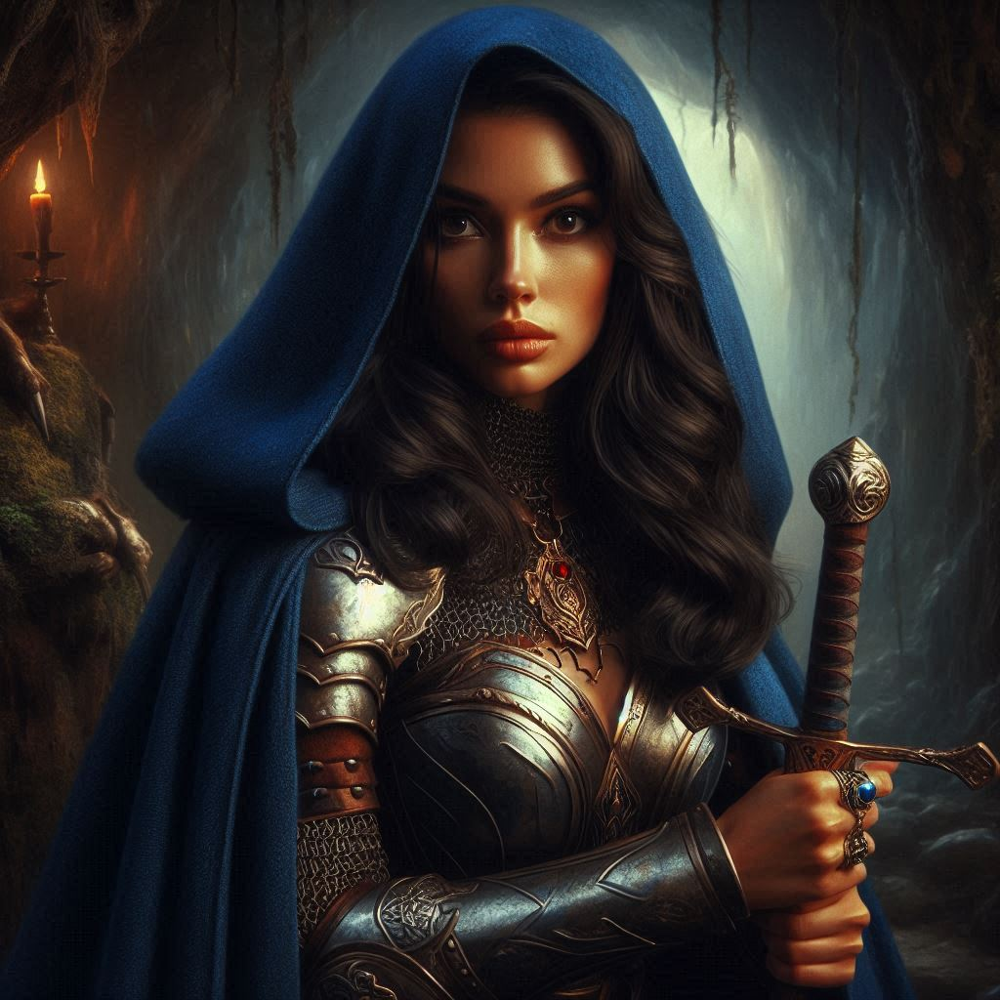

The Betrayer
You stand amidst the cold, damp air of Hemlock Caverns, shadows flickering on the stone walls from the fading light of Liora’s protective spell. Jorsh, the boy you once loved, stands before you, his hands raised in surrender but his eyes alight with the dark power that hums just beneath the surface. His words linger in the air, stoking doubt in your heart—Varis is the true enemy. The royal family is complicit in Yew’s downfall. Everything he’s said feels like a dagger aimed at your conscience, at the very core of your oath to the Kingdom.
Princess Hawthorn, still bound by Jorsh’s dark magic, glares at you from her corner of the cave. Her lips are twisted in frustration, her eyes silently urging you to act. You can feel the weight of your choice hanging over you, heavy and unavoidable. Jorsh has betrayed the kingdom, but his words ring with truth. Could the royal family really be entangled in Varis's treachery?
But you are a ranger. And you swore an oath.
With a deep breath, you push aside the rush of memories, the affection you once felt for Jorsh. His cause is just, but his methods are reckless. Dangerous. He can’t be trusted.
“I can’t join you, Jorsh,” you say, stepping forward and raising your sword. “Whatever Varis has done, you’ve gone too far. You’ve hurt too many people, crossed too many lines. I’m placing you under arrest.”
Jorsh’s face contorts, a flicker of disbelief crossing his features. “After everything I’ve told you? After everything we were?”
Your grip tightens around your sword hilt, though your hands shake. You won’t show weakness. Not now. Not in front of him. “I made a promise to protect this kingdom, Jorsh. I won’t break it for you.”
A long silence falls over the cavern, broken only by the sound of Princess Hawthorn’s ragged breathing. For a moment, you see the boy you once knew in Jorsh’s eyes—the one who taught you to shoot a bow, who made you laugh in the forests of Belladonna. But then, the dark gleam returns. His expression hardens.
“Foolish, Kira,” he mutters. “You can’t stop me. No one can.”
He lifts his hands, the dark tendrils of magic curling around his wrists, gathering in strength. The air swirls with energy as Jorsh begins to chant under his breath, his magic swelling, his eyes glowing with a furious determination. He’s going to break free.
You rush toward him, but just as the dark magic is about to explode outward, Liora stirs. The sorceress groans from her place on the cavern floor, weak but determined. With a flick of her fingers and a hoarse incantation, a binding spell wraps around Jorsh like a snake, coiling tighter and tighter until the dark magic fizzles, leaving him gasping for breath.
Jorsh staggers, his knees hitting the ground. His eyes meet yours, filled with anguish, the anger draining out of him. “I never wanted it to be like this, Kira.”
You bite your lip, forcing down the ache in your chest. “It didn’t have to be.”
Liora rises shakily, her voice hoarse. “His magic is bound... for now,” she says, leaning heavily against the cavern wall. “But it won’t last forever.”
Princess Hawthorn, now free from Jorsh’s spell, brushes herself off and steps toward you. “We need to act quickly. Varis is still out there, and the longer we waste time here, the closer he gets to opening that portal.”
You nod, feeling the urgency gnawing at you. But there’s another decision you have to make. Jorsh is dangerous, but he knows more about Varis’s plan than anyone. If you take him with you, he might help... or he might betray you all. Liora looks weak, barely able to stand, but she could stay behind and keep Jorsh under control. But that would mean splitting your strength, leaving the sorceress behind while you venture deeper into the caverns.